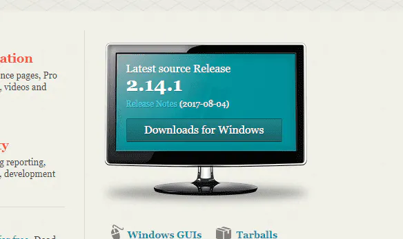

Git no Windows e GitHub: Como Instalar e Configurar
Neste post vou fazer um tutorial simples para utilizar o Git no Windows e
comitar seus códigos no GitHub.
1) Instalando o Git no Windows
No site oficial do Git (http://git-scm.com/) clique em “Downloads for Windows”.
Execute o arquivo baixado e vá dando “Next” até a tela “Select Components”.
Nesta tela eu escolho as opções como na imagem:
Em especial eu marco as opções em “Windows Explorer integration”, assim eu consigo
abrir o prompt de comandos do Git (Git Bash) em qualquer pasta, basta clicar com o
botão direito e “Git Bash Here”. A última opção também é interessante, porque ele instala
uma fonte melhorzinha para o prompt de comandos.
Nota: O Git para Windows vem com um prompt de comandos próprio (o Git Bash), que
além dos comandos git também fornece alguns comandos Unix que podem ser bem úteis
(além de ser bem mais bonitinho que o prompt de comandos padrão do Windows).
Na próxima tela, eu escolho a opção: “Use Git from the Windows Command Prompt”.

Esta opção permite usar o comando git tanto no Git Bash quanto no terminal padrão do
Windows.
A terceira adiciona comandos do Unix no terminal do Windows, além do próprio comando
git, mas alguns comandos do Windows serão substituídos por comandos Unix que tem o
mesmo nome (como
find e sort).
Outra configuração importante: quebra de linhas.